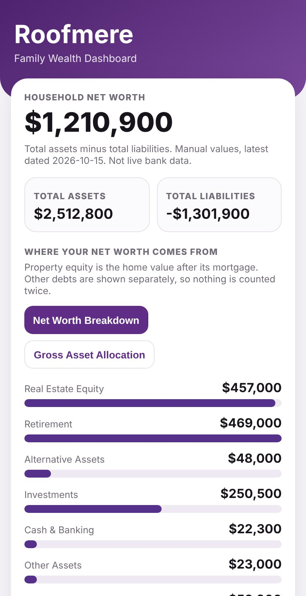

01 · Organize
Bring together accounts, investments, property and debts. Start with a few balances or import supported files.
Keep a clear picture of your household finances in a place you control. Review what you own and owe, update on your schedule, and decide what financial context to share with an AI of your choice.
Try the Pro DemoStart with Local FreeThe Pro Demo uses fictional data and includes AI Context Export for exploration. Local Free does not include AI Context Export.

Bring together accounts, investments, property and debts. Start with a few balances or import supported files.
Review household assets and liabilities together, then refresh information when it changes. No daily transaction categorization required.
Back up your records. With Pro, prepare financial context for an external AI, review it, and choose whether to share it.
AI Context Export is available in Local Pro, not Local Free. The free-to-explore Pro Demo includes it with fictional household data, so you can see the workflow before purchasing. Demo access does not unlock Pro features for your own Local Free records.
The full screen-recorded walkthrough will appear here when the approved video file is ready. In the meantime, try the working Pro Demo or read the step-by-step walkthrough.
Try AI Export in the Pro DemoHow AI Export worksRoofmere does not automatically send your export to an AI. Review any information you copy. Once pasted into another provider, its processing and retention terms apply; Roofmere cannot withdraw that shared data.
Your financial records live in the browser on your device. No bank connection required. Browser-local storage is not automatic backup or cross-device sync; keep your own backup.
Use your own configured hosting and database for authorized household sharing and synchronization. Setup, security configuration, hosting fees and maintenance are your responsibility.
| Edition | Best for | AI Context Export |
|---|---|---|
| Pro Demo Fictional sample · Free to explore | Seeing the real Pro workflow before deciding | Yes — demo data only |
| Local Free Free | Your own browser-local overview, supported imports and backup | No |
| Local Pro $39 beta / $49 planned regular · One-time | Advanced imports, history/reports and AI Context Export for your own data | Yes |
| Private Cloud Separate self-hosted offering | Authorized shared household access, sync and document Vault | Check current edition entitlements |
The Pro Demo is a sample mode, not a separately purchased edition. iPhone app is planned, not released. Listed Pro prices do not guarantee checkout availability; verify the current purchase status before paying.
Get startedPricing & availabilityRoofmere does not connect to your bank or automatically refresh balances. If live transaction syncing and automated categorization are essential, it may not be the right fit. If you prefer a periodic household overview and direct control over your financial information, start with the sample and decide for yourself.